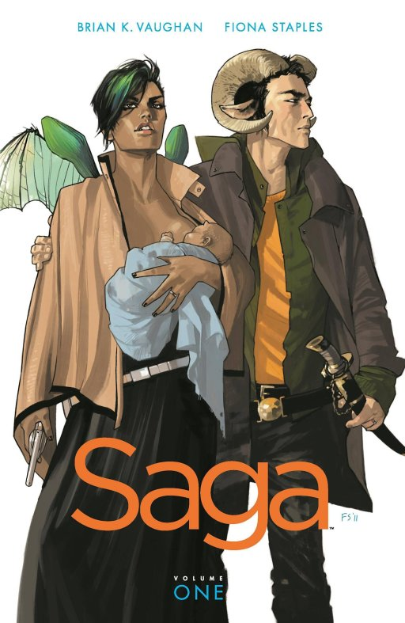
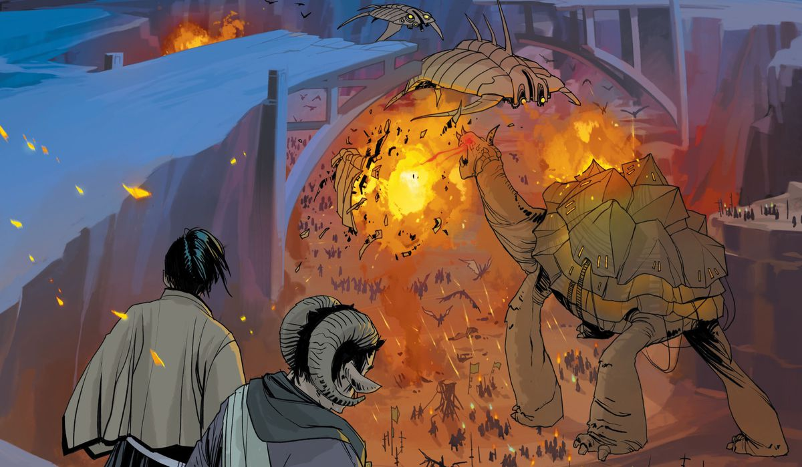
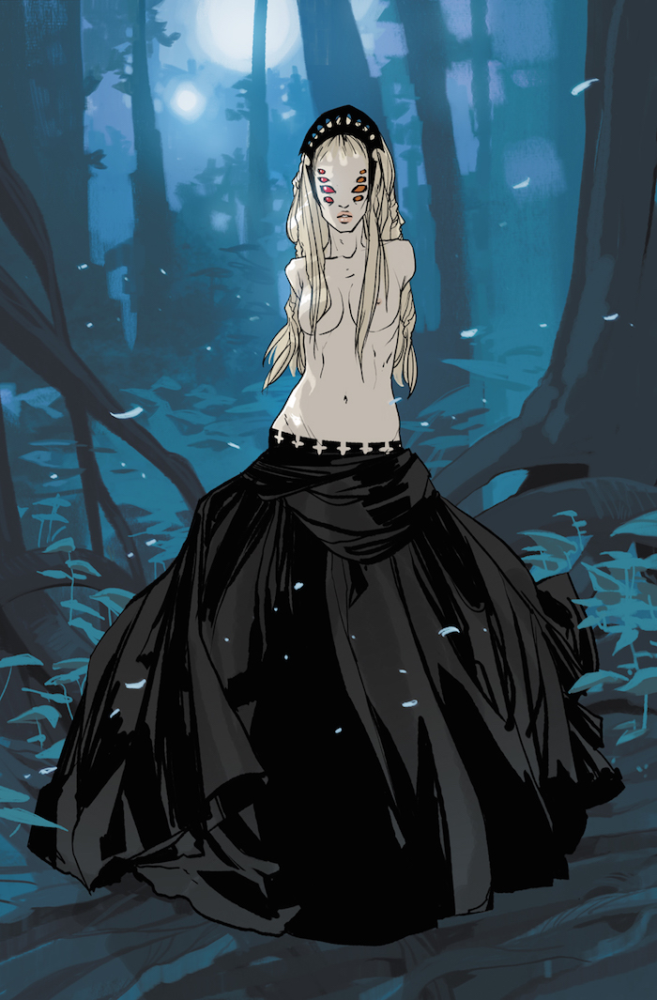
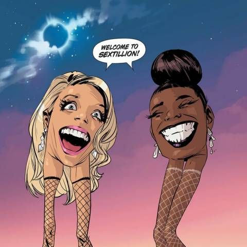

Review #1 - Saga Vol.1 By Brian K.vaughn and Fiona Staples
I decided to pick up this graphic novel after looking for something new. I was kind of bored of the super hero universe of both Marvel and DC so I looked toward indie publishers for a fresh new story. After searching the internet for the highest rated indie graphic novels, Saga finally caught my eye. Everywhere on the internet I saw only praise for Saga. I saw a post online that claimed that Saga was like the combination of Star Wars and Game of Thrones. That got me excited. After reading the first volume, I can say that is not true. Saga is only like Star Wars in that it is set in outer space, and the only thing it strongly relates to Game of Thrones is the amount of mature content it has. Saga is a sci-fi fantasy epic with a simple overall premise. Two star-crossed lovers from opposing warring factions are trying to escape the war torn galaxy to a place that is more sustainable to raise a family. It’s a basic premise, but it offers a lot. The reader is introduced to the universe of Saga almost abruptly. There are so many planets, races, cultures, and technologies. So much is to be explored in this universe, and with this series predicted to only have 108 issues, I don’t think all the mysteries of Saga’s universe will be unveiled. The scale of world building is massive, but the narrative of the story almost ignores that to focus on the main characters: Marko the pacifist from the moon Wreath, Alana a military deserter from the planet Landfall, and their baby Hazel. In the midst of all the chaos and the foreign universe of Saga, Brian K. Vaughn wants to create a relatable human story which is a great thing. Even the way the characters speak is in a manner that sounds contemporary and relatable because of all the colloquialisms used in the dialogue. The first volume, focuses on the family escaping the planet Cleave. In order to escape, they must find the Rocketship forest. In the first few issues, we are introduced to the crazy world of Saga with talking robots with TV heads to giant sea turtles fighting space ships. The ideas presented in this book feel a bit over the top at some points. These are ideas that a kid could have came up with, but there is something about seeing this universe presented in a visual medium that makes it beautiful to look at much to the credit of the artist, Fiona Staples.
Fiona’s artwork is solid. The emotions look real, the coloring brings everything to life, and the paneling is handled with such great care so that some panels can speak volumes. Some of the artistic choices such as Prince IV, The TV head Robot, having flashbacks on his monitor was well thought out. The character designs are great – expect for Marko’s and especially the Stalker -, but I believe the creative team could have done a better job designing the setting of some of the places that are visited in the book. Each place did look different, but I just didn’t feel like there was any originality. Nothing about the landscape or the environment caught my eye. Some settings were a mix of modern day design and futuristic design.
Moving on to the characters. The characters are great and probably the best part of the story, and with this amount of world building, I wouldn’t be surprised to see a hundred more characters before the end of this series. Marko and Alana act like new parents who are young and full of charisma. The Will is labeled as a villain, but he does have redeeming qualities as does Prince IV. These characters act out their role in the story but they act human. They have their own desires and ambition and life, and the reader is able to see both sides.

One thing that bothered me about this book was the amount of mature content. It felt so unnecessary at certain points like the Sextillion plot line. It looks like the author wanted take as many creative liberties as he could to show how revolutionary his story is. The real reason is this is an Image comic book and creators can do much more at Image than the other two major comic book publishers.
The story was enjoyable, and it can definitely expand and go in many directions. I read through the first volume with ease, and thing that made it so easy to read was that it was a fun book. I already bought the second volume. That is the best rating I can give this book; I am going to continue reading this series till issue 108.